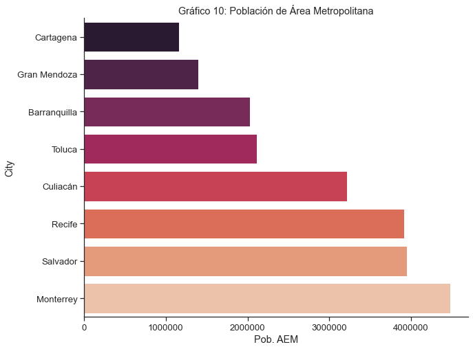
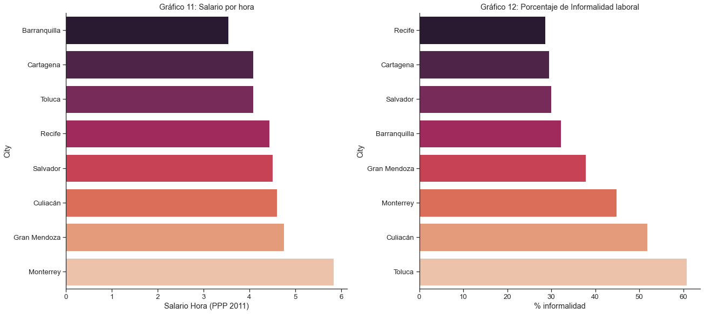

MEDICIÓN DE LA PRODUCTIVIDAD EN CIUDADES DE LATINOAMÉRICA
El objetivo de la presente consultoría es identificar los principales determinantes de los niveles de productividad para una selección de ciudades de América Latina. Se intentará reunir un conjunto de indicadores y métricas que reflejarán la situación actual de la productividad de dichas ciudades en un sentido amplio. Estos indicadores se encuentran segmentados según diferentes ámbitos de políticas para la productividad siguiendo “Determinantes de la Productividad en las Ciudades y Políticas Públicas para su Mejora”, de Guillermo Alves y Pablo López (2020): Conectividad Interna, Conectividad Externa, Trabajo y Conocimiento, Conglomerados y Cadenas de Valor, Facilitación de Negocios. A su vez, cada uno de los indicadores se puede relacionar con entre uno y cuatro ámbitos de productividad: Acceso a insumos, Cooperación entre empresas, Competencia y Empleo.
El primer paso entonces, será realizar una preselección de las ciudades que serán objeto de análisis. Para ello se trabajó en base a indicadores previamente identificados en la consultoría Alves, López, Carreras, Julio 2020, para luego complementar y ampliar.
En este primer producto, se explicarán los fundamentos de la mencionada preselección de ciudades que serán objeto de la consultoría. Haciendo uso de las ya mencionadas métricas surgidas de Alves, López, Carreras, Julio 2020, se intentará generar una muestra diversa de ciudades en términos de las problemáticas de productividad a las que éstas se enfrentan. En segundo lugar, se resumirán cuáles son los indicadores para los cuáles se posee información y para cuáles hará falta incorporar nueva información. Esto para lograr que las métricas abarquen la totalidad de los ámbitos planteados.
Criterios de selección de Ciudades
La preselección de las ciudades responde a un proceso ordenado de filtro y segmentación, de acuerdo a varias características de las mismas. Estas tuvieron que ver con: la población total de la zona metropolitana, los principales sectores económicos de la urbe y su acceso al resto de los mercados del país.
La primer parte del proceso tuvo que ver con la cantidad de habitantes de la ciudad. Se tuvo en cuenta la población total de la zona metropolitana en relación al resto de las urbes del país para así lograr seleccionar ciudades “intermedias”. Para ello se mantuvieron las ciudades de mayor población (de cada país), siempre que estuvieran por debajo del percentil 90 de su grupo. Este valor puede variar dependiendo de la muestra de ciudades que se disponga del país en cuestión.
Una vez seleccionado el grupo de ciudades con "población intermedia", se consideraron tres criterios para intentar agruparlas. Estos grupos podrían ser utilizados como “grupo de control” a la hora de comparar los indicadores de cada ciudad en caso de que se realicen informes posteriores, y por eso el interés en encontrar ciudades con características similares desde algún punto de vista. Los criterios utilizados tienen que ver con los sectores económicos que generan una masa salarial superior al promedio para el país, el total de población de la zona metropolitana y la cercanía a “grandes mercados”. Concretamente, los criterios para segmentar y agrupar a las ciudades son:
- El primer criterio utilizado corresponde a la participación de tres sectores económicos particulares en las masas salariales totales de cada ciudad. Las actividades seleccionadas por su importancia fueron: Agrícola (actividades primarias), Industrias de Baja Tecnología y Resto de la Industria Manufacturera. Para cada uno de esos sectores, se calculó la proporción de la masa salarial que ese sector representa en la masa salarial total de la ciudad, para luego dividirla por el promedio de ese mismo valor a nivel nacional. De esta manera, si el valor del ratio se encuentra por encima de uno, significa que la masa salarial que aporta el sector en cuestión en la ciudad es mayor al valor promedio para el país y denotaría cierta especialización de la urbe en esa actividad económica. Este enfoque permite seleccionar tres grupos de ciudades por la importancia que los sectores elegidos tienen en su actividad económica total y así permitir un ejercicio comparativo más enriquecedora. La selección corresponde a las ciudades que presentaron los mayores ratios para cada país.
- El segundo segmento se conforma de ciudades que forman parte de zonas metropolitanas de importancia. Habiendo filtrado inicialmente las “grandes metrópolis” de la región, este criterio permite encontrar ciudades que componen polos económicos de importancia y representan mercados atractivos en sí mismos. Si bien el criterio no estuvo relacionado con la cercanía/lejanía a mercados de importancia, muchas de estas ciudades no logran acceder a porcentajes importantes de las masas salariales de su país en menos de 9 horas de automóvil.
- El último grupo se compone de ciudades que poseen uno o más centros de consumo significativos a una distancia que se pueda recorrer en menos de 9 horas (en automóvil). Estos centros de consumo son grandes en relación a la ciudad en cuestión y deberían generar un impacto significativo en la actividad económica de la urbe. Para este parámetro, se calculó cuánto crece la masa salarial a la que se puede acceder desde la ciudad en menos de 9 horas de automóvil. Este valor resulta de dividir la masa salarial total del país a la que se puede acceder en menos de 9 horas de automóvil desde la ciudad, por la masa salarial total de la ciudad. Esto representa entonces un coeficiente de “Multiplicación de masa salarial”.
Una vez seleccionadas las ciudades que componen cada grupo, se mostrarán variables relacionadas a la productividad que se encuentran disponibles. Dichas variables serán:
- Población de la ciudad
- Población total de la zona metropolitana (en caso de que esté disponible)
- Salario por hora en USD (ajustados por “paridad de poder adquisitivo” del año 2011)
- Tasa de desempleo
- Porcentaje de asalariados informales
- Porcentaje de la población con secundario finalizado
- Porcentaje de la población con educación superior finalizada
- Porcentaje de la masa salarial del país a la que se puede acceder en menos de 8 horas de automóvil (en caso de que sea relevante)
- Multiplicador de la masa salarial en menos de 9 horas de automóvil (en caso de que sea relevante)
Selección de ciudades según actividad económica
Como se mencionó más arriba, se seleccionaron tres grupos de ciudades según la participación de tres actividades económicas de interés: Agropecuaria, Industria de Baja Tecnología y Resto de la Industria. El criterio aplicado a cada grupo fue el mismo:
- Se calcula el porcentaje de la masa salarial de la ciudad adjudicada al sector en cuestión
- Se calcula el ratio entre el valor de la ciudad y el promedio del país
- Se seleccionan las ciudades que presentan los valores más altos para cada país
Si bien esto no significa que el sector sea el más importante de la ciudad, si denota que el sector aporta una masa salarial significativa en esa ciudad en comparación con el resto del país.
Sector Agrícola y actividades primarias
El criterio se aplicó de manera general para todas las ciudades que pasaron el filtro de población intermedia pero la selección se realizó para ciudades de Argentina, Brasil, México y Colombia. Se agrega la ciudad de Itapúa (Paraguay) por presentar el coeficiente más alto fuera del grupo de países principales. El gráfico 1 muestra los ratios de masa salarial primaria de la ciudad sobre el promedio del país.
La tabla 1 muestra las ocho ciudades selecciondas a partir de la participación del sector primario en sus masas salariales. Los gráficos 2 y 3 muestran comparaciones de salarios y desempleo, respectivamente.
| Población estimada | Relación MS Agro ( Ciudad / País ) | Salario Hora (PPP 2011) | % informalidad | % desempleo | % Secundario Completo | % Superior Completo | % m. salarial en < 8hs | ||
|---|---|---|---|---|---|---|---|---|---|
| Country | City | ||||||||
| Argentina | Gran Tucuman-Tafi Viejo | 1,448,188 | 0.959 | 4.454 | 47.714 | 10.321 | 42.952 | 10.203 | 13.371 |
| Brasil | Campo Grande | 774,202 | 1.898 | 5.548 | 23.169 | 8.086 | 38.189 | 13.157 | 3.962 |
| Goiania | 1,302,000 | 2.722 | 4.752 | 23.668 | 10.999 | 40.484 | 11.149 | 6.143 | |
| Colombia | Armenia | 2,959,694 | 1.363 | 3.393 | 31.333 | 7.870 | 36.443 | 8.642 | 75.809 |
| Villavicencio | 527,668 | 1.532 | 3.608 | 35.294 | 8.242 | 40.838 | 8.776 | 41.701 | |
| Mexico | Hermosillo | 812,229 | 1.923 | 5.291 | 44.842 | 3.458 | 36.755 | 14.938 | 7.171 |
| La Laguna | 1,215,817 | 2.102 | 4.058 | 45.863 | 4.140 | 29.628 | 12.378 | 38.500 | |
| Paraguay | Itapúa | 608,215 | 3.080 | 5.780 | 64.672 | 3.695 | 40.267 | 13.336 | 33.742 |
Sector Industrias de Baja tecnología
Nuevamente, el criterio se aplicó de manera general para todas las ciudades que pasaron el filtro de población intermedia pero la selección se realizó para ciudades de Argentina, Brasil, México y Colombia. Se agrega la ciudad de Trujillo (Perú) por presentar el coeficiente más alto fuera del grupo de países principales. El gráfico 4 muestra los ratios de masa salarial de industria de baja tecnología de la ciudad sobre el promedio del país.
La tabla 2 muestra las ocho ciudades selecciondas a partir de la participación del sector de industria de baja tecnología en sus masas salariales. Los gráficos 5 y 6 muestran comparaciones de salarios y desempleo, respectivamente.
| Población estimada | Relación MS Baja Tec ( Ciudad / País ) | Salario Hora (PPP 2011) | % informalidad | % desempleo | % Secundario Completo | % Superior Completo | % m. salarial en < 8hs | ||
|---|---|---|---|---|---|---|---|---|---|
| Country | City | ||||||||
| Argentina | Gran Rosario | 1,198,528 | 1.456 | 5.293 | 33.799 | 11.052 | 46.139 | 13.994 | 81.574 |
| Mar del Plata-Batan | 656,456 | 1.809 | 6.461 | 36.678 | 11.301 | nan | 13.182 | 74.219 | |
| Brasil | Cuiaba | 765,000 | 1.695 | 5.509 | 20.030 | 8.580 | 39.025 | 11.132 | 1.122 |
| Fortaleza | 2,643,000 | 2.086 | 4.323 | 31.771 | 11.100 | 38.097 | 9.954 | 4.153 | |
| Colombia | Medellin | 2,427,000 | 1.912 | 3.547 | 27.665 | 13.896 | 39.631 | 7.865 | 33.312 |
| Mexico | Puebla-Tlaxcala | 1,576,000 | 2.183 | 3.253 | 62.985 | 3.137 | 33.771 | 14.053 | 39.652 |
| Tlaxcala-Apizaco | 1,273,000 | 2.596 | 3.273 | 69.132 | 3.418 | 32.888 | 12.492 | 42.306 | |
| Peru | Trujillo | 919,899 | 2.196 | 4.260 | 92.151 | 4.627 | 47.888 | 17.821 | 14.232 |
Resto de la Industria Manufacturera
Por último, se aplica el mismo criterio para el sector de Resto de la Industria Manufacturera. La selección se realizó para ciudades de Argentina, Brasil, México y Colombia. Se agregan las ciudades de Guayaquil (Ecuador) y Arequipa (Perú) por presentar los coeficientes más altos fuera del grupo de países principales. El gráfico 7 muestra los ratios de masa salarial de resto de la industria de la ciudad sobre el promedio del país.
La tabla 3 muestra las ocho ciudades selecciondas a partir de la participación del sector de resto de la industria en sus masas salariales. Los gráficos 8 y 9 muestran comparaciones de salarios y desempleo, respectivamente.
| Población estimada | Relación MS Resto Ind ( Ciudad / País ) | Salario Hora (PPP 2011) | % informalidad | % desempleo | % Secundario Completo | % Superior Completo | % m. salarial en < 8hs | ||
|---|---|---|---|---|---|---|---|---|---|
| Country | City | ||||||||
| Argentina | Gran Cordoba | 1,430,000 | 1.509 | 4.639 | 38.948 | 12.746 | nan | 14.496 | 86.096 |
| Brasil | Belo Horizonte | 1,433,000 | 1.477 | 4.830 | 20.504 | 10.395 | 39.602 | 10.983 | 34.599 |
| Curitiba | 3,595,662 | 2.189 | 5.984 | 16.671 | 8.549 | 42.430 | 13.257 | 17.940 | |
| Colombia | Cali | 2,228,000 | 2.044 | 4.105 | 39.651 | 12.281 | 40.257 | 8.584 | 39.405 |
| Ecuador | Guayaquil | 2,291,000 | 1.807 | 4.400 | 36.198 | 2.880 | 41.354 | 10.438 | 86.538 |
| Mexico | Juárez | 1,321,000 | 3.333 | 5.420 | 45.069 | 2.162 | 26.261 | 8.236 | 4.938 |
| Tijuana | 1,301,000 | 1.673 | 5.197 | 54.284 | 4.188 | 29.406 | 9.688 | 33.103 | |
| Peru | Arequipa -area metropolitana | 1,008,000 | 1.711 | 4.433 | 90.769 | 3.420 | 57.578 | 22.818 | 8.692 |
Selección de ciudades según población de Área Metropolitana
El segundo criterio utilizado para seleccionar y segmentar a la ciudades tiene que ver con la población de la zona metropolitana de la urbe. Como se mencionó más arriba, se dejaron fuera de consideración a las grandes metrópolis de cada país. Luego de aplicar ese filtro, se tomaron en cuenta las ciudades cuyas Áreas Estadísticas Metropolitanas (AEM de ahora en adelante) presentaban las mayores poblaciones de los principales países de interés: Argentina, Brasil, Colombia y México. El gráfico 10 muestra las poblaciones totales de las zonas metropolitanas de las ciudades seleccionadas.

Vale la pena mencionar que este grupo de ciudades no alcanza a un porcentaje significativo de la masa salarial total del país en menos de 8 horas de automóvil (a excepción de Toluca, México). La figura 10.B muestra dichos valores.
La tabla 4 muestra las ocho ciudades selecciondas a partir del tamaño de sus regiones metropolitanas. Los gráficos 11 y 12 muestran comparaciones de salarios y desempleo, respectivamente.
| población estimada | Pob. AEM | Salario Hora (PPP 2011) | % informalidad | % desempleo | % Secundario Completo | % Superior Completo | % m. salarial en < 8hs | ||
|---|---|---|---|---|---|---|---|---|---|
| Country | City | ||||||||
| Argentina | Gran Mendoza | 114,822 | 1,400,000 | 4.758 | 37.820 | 8.458 | 38.399 | 14.489 | 7.894 |
| Brasil | Recife | 1,555,000 | 3,914,397 | 4.439 | 28.605 | 15.437 | 40.645 | 10.719 | 6.693 |
| Salvador | 2,677,000 | 3,953,290 | 4.505 | 30.008 | 15.719 | 39.535 | 9.550 | 6.295 | |
| Colombia | Barranquilla | 1,274,250 | 2,025,071 | 3.537 | 32.140 | 7.416 | 46.860 | 10.078 | 13.864 |
| Cartagena | 914,552 | 1,161,320 | 4.080 | 29.486 | 10.326 | 46.219 | 10.832 | 13.864 | |
| Mexico | Culiacán | 3,216,000 | 3,216,000 | 4.601 | 51.790 | 4.359 | 39.343 | 18.460 | 9.324 |
| Monterrey | 1,136,000 | 4,475,949 | 5.837 | 44.843 | 3.447 | 29.620 | 11.763 | 10.595 | |
| Toluca | 489,333 | 2,116,506 | 4.084 | 60.807 | 4.223 | 34.925 | 13.991 | 44.036 |

Selección de ciudades según cercanía a mercados
El último grupo de ciudades se seleccionó en función del pontencial de los mercados que poseen en menos de 9 horas de automóvil. Para ello se calculó el ratio entre la masa salarial total a la que la ciudad puede acceder en menos de 9 horas, sobre la masa salarial total de la ciudad. Este valor representaría el ratio de cuántas veces se multiplica la masa salarial de la ciudad en menos de 9 horas de automóvil. El gráfico 13 muestra estos valores.
Vale mencionar que dicho análisis se aplicó en las principales economías de la región: Argentina, Brasil, Colombia y México. La tabla 5 muestra la selección de ciudades y algunas variables de interés. Los gráfico 14 y 15 muestran comparaciones de salarios y desempleo, respectivamente.
| Población estimada | Multiplo M. Salarial en < 9hs | Salario Hora (PPP 2011) | % informalidad | % desempleo | % Secundario Completo | % Superior Completo | ||
|---|---|---|---|---|---|---|---|---|
| Country | City | |||||||
| Argentina | Bahia Blanca-Cerri | 309,544 | 64.266 | 6.497 | 29.321 | 9.010 | 49.041 | 15.706 |
| Neuquen-Plottier | 341,301 | 39.534 | 6.575 | 21.160 | 4.476 | 32.309 | 14.140 | |
| Brasil | Aracaju | 623,000 | 13.576 | 4.425 | 30.172 | 16.098 | 36.909 | 10.539 |
| Florianopolis | 477,798 | 18.897 | 5.935 | 10.312 | 6.505 | 43.246 | 14.023 | |
| Colombia | Manizales | 434,403 | 43.378 | 3.194 | 27.924 | 6.761 | 39.311 | 7.780 |
| Pereira | 590,554 | 33.035 | 3.289 | 31.836 | 7.636 | 37.533 | 7.210 | |
| Mexico | San Luis Potosí | 824,229 | 43.218 | 4.573 | 48.059 | 3.152 | 32.462 | 13.320 |
| Acapulco | 863,431 | 41.648 | 2.608 | 69.588 | 4.105 | 28.840 | 9.225 |